SwiftSketch is a diffusion-based model for object sketching that offers several key benefits:
Human-drawn sketch datasets present a tradeoff: large-scale collections like QuickDraw (50M sketches) lack proffesional appearance,
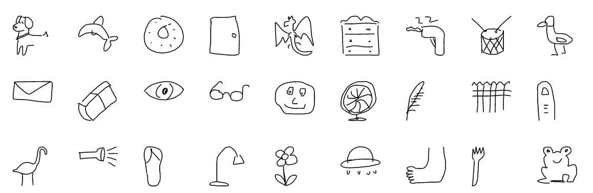
while professionally curated datasets are often small and domain-specific, such as the dataset by Berger et al., which focuses on portraits, and OpenSketch, which contains product design sketches:
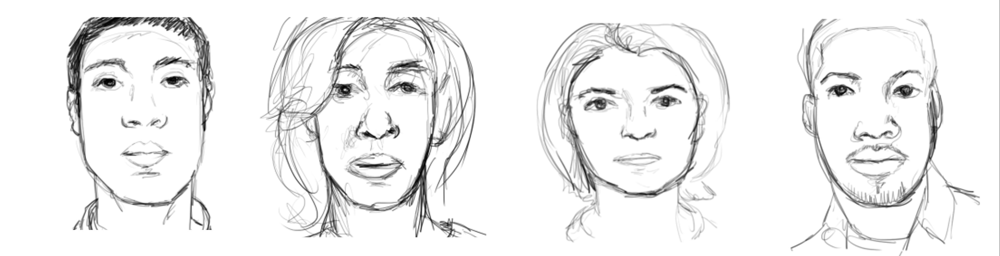
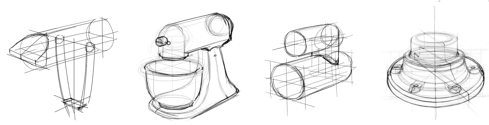
To address this, we introduce a synthetic image-sketch dataset. We use SDXL to generate the images, and the corresponding vector sketches are produced by our optimization-based technique, ControlSketch.
Our synthetic sketches are provided in vector format, maintaining high fidelity to the input image while exhibiting a professional, yet natural and abstract style:
The ConrtolSketch dataset comprises 35,000 pairs of images and their corresponding sketches in SVG format, spanning 100 object categories. Download the data
We utilize 15 categories of the ControlSketch dataset to train a generative model Mθ that learns to efficiently produce a vector sketch from an input image. The model generates a new sketch by progressively denoising randomly sampled Gaussian noise ST ∼ 𝒩(0, I) conditioned on the image embedding.
The training of the model follows the standard conditional diffusion framework, with task-specific modifications to address the characteristics of vector data and the image-to-sketch task. In our case, the model learns to denoise the set of (x, y) coordinates that define the strokes in the sketch. At each training iteration, an image I is passed through a frozen CLIP image encoder, followed by a lightweight CNN, to produce the image embedding Ie. The corresponding vector sketch S0 is noised based on the sampled timestep t and noise ε, forming St (with 𝓡(St) illustrating the rasterized noised sketch, which is not used in training). The network Mθ, a transformer decoder, receives the noised signal St and is tasked with predicting the clean signal S0, conditioned on the image embedding Ie and the timestep t (fed through the cross-attention mechanism). The network is trained with two loss functions: one based on the distance between the control points and the other on the similarity of the rasterized sketches.
Input
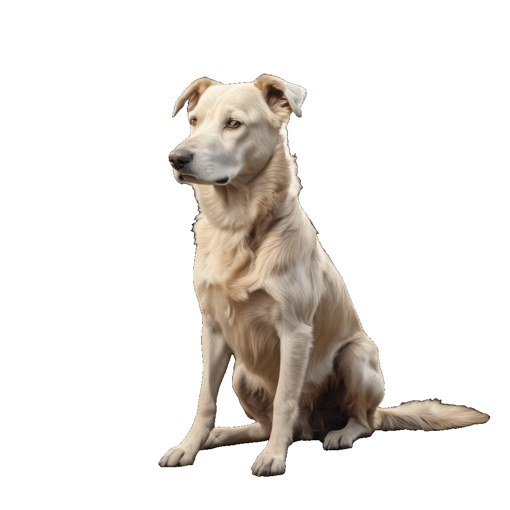12s
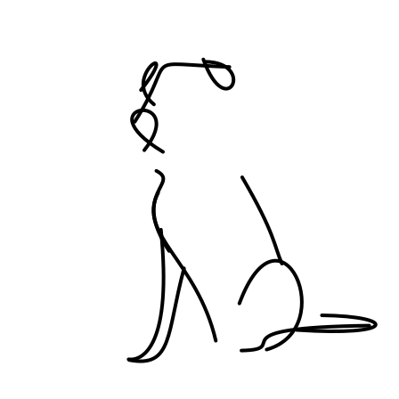17s
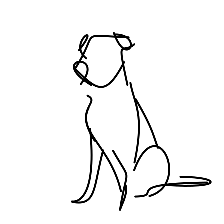22s
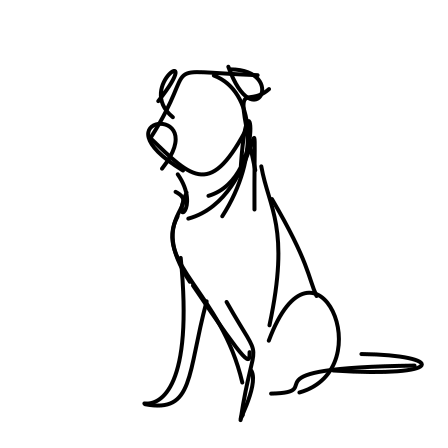27s
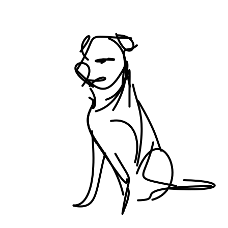32s
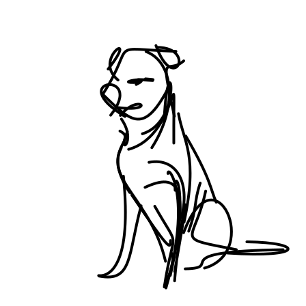Input
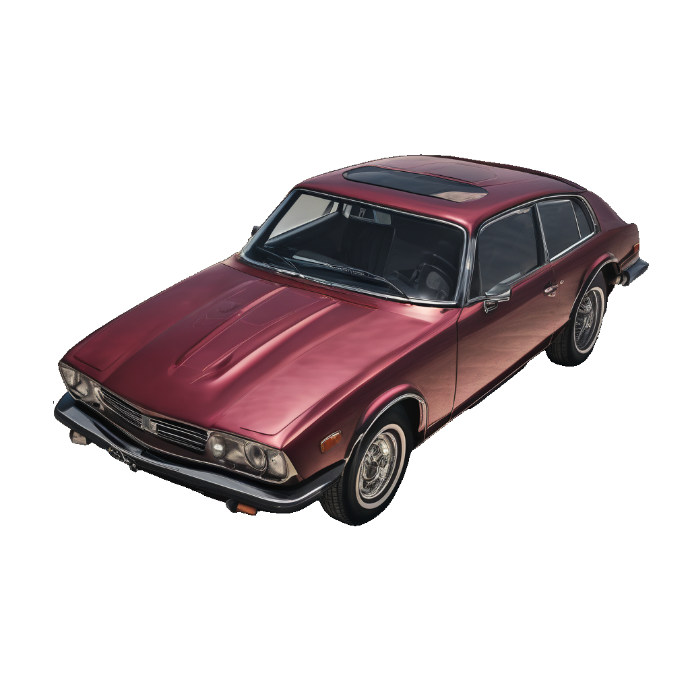12s
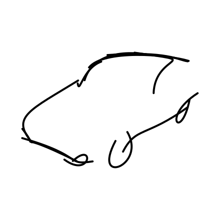17s
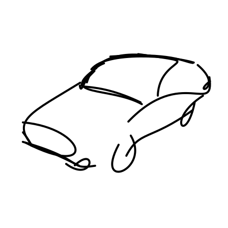22s
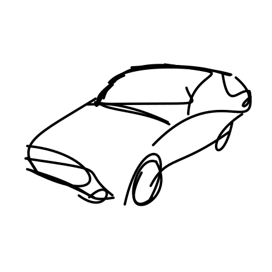27s
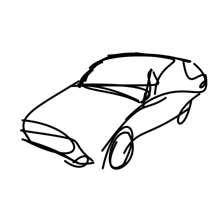32s
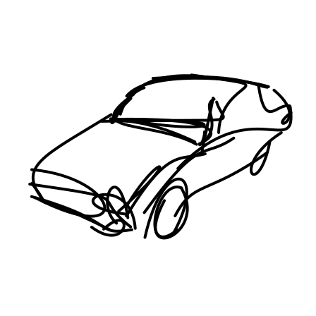
Generated sketches are visualized progressively, with the stroke count shown on top. Early strokes capture the
object’s contour and key features, while later strokes add finer details.
Given an input image depicting an object, our goal is to generate a corresponding sketch that maintains high fidelity to the input while preserving a natural sketch-like appearance. Following common practice in the field, We define a sketch as a set of n black strokes where each stroke is a two-dimensional cubic Bézier curve. We optimize the set of strokes using the standard SDS-based optimization pipeline with two key enhancements: an improved stroke initialization process and the introduction of spatial control.
For stroke initialization we use the image attention map extracted using DDIM inversion.
To emphasize critical areas while ensuring comprehensive object coverage, the object area is divided into k equal-area regions, using a weighted K-Means method that
accounts for both attention weights and pixel locations. We distribute n points based on the attention values of each region while ensuring a minimum allocation per region. The initial strokes are derived from
these points.
At each optimization step, the rasterized sketch is noised based on t and ε,
then fed into a depth ControlNet text-to-image diffusion model instead of a standard text-to-image diffusion model.
The model predicts the noise ê conditioned on the image caption and the depth map of the image.
The predicted noise is used for the SDS loss.
We balance the weighting between the spatial and textual conditions to achieve an optimal trade-off between
semantic
fidelity, derived from the caption (ensuring the sketch is recognizable),
and geometric
fidelity, derived from the depth map, which governs the accuracy of the spatial structure.